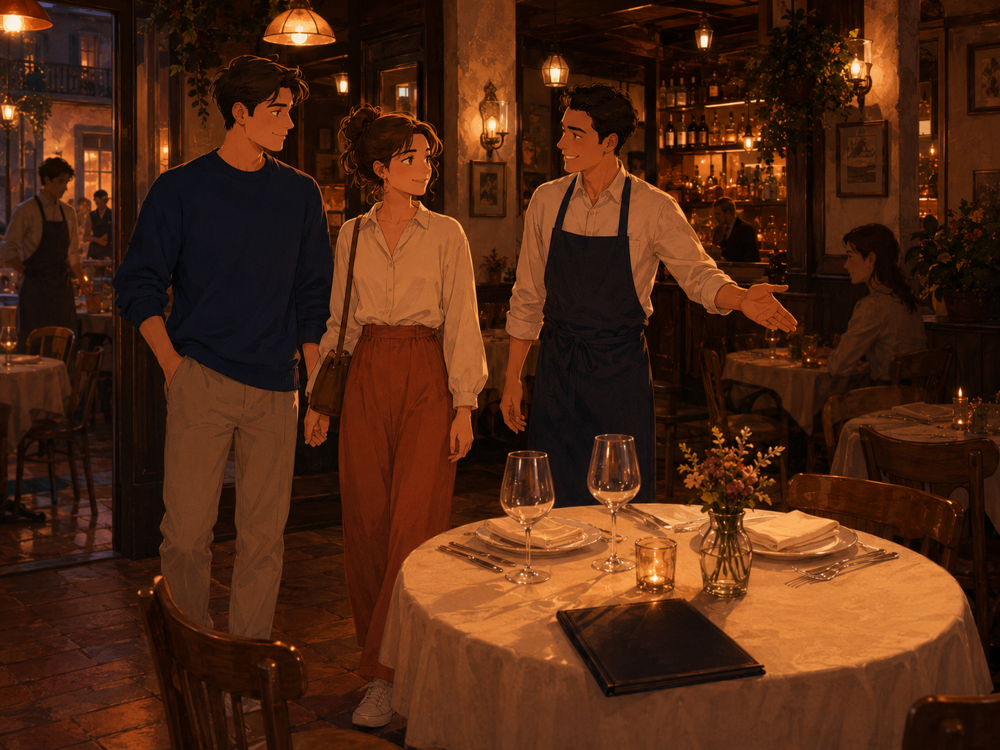
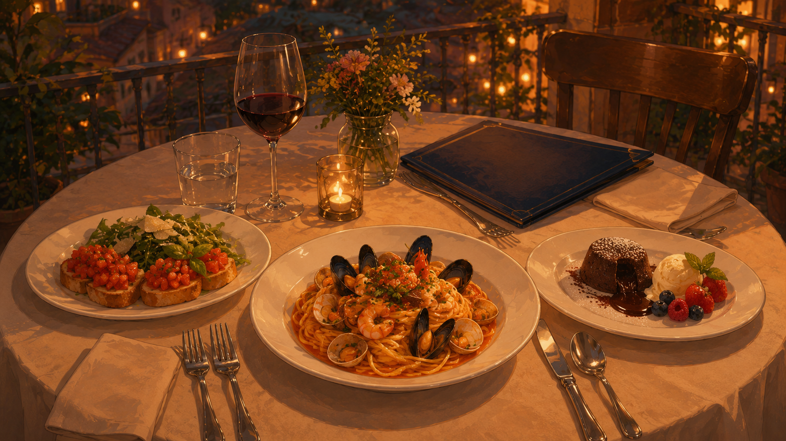
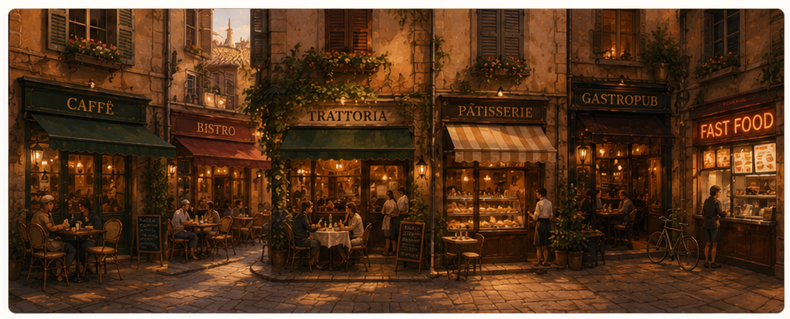
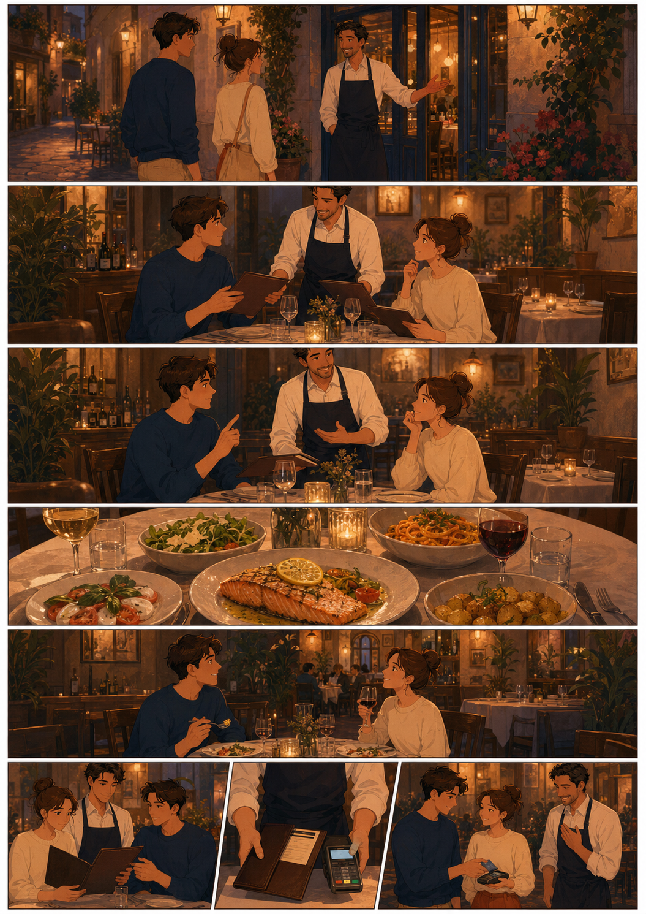
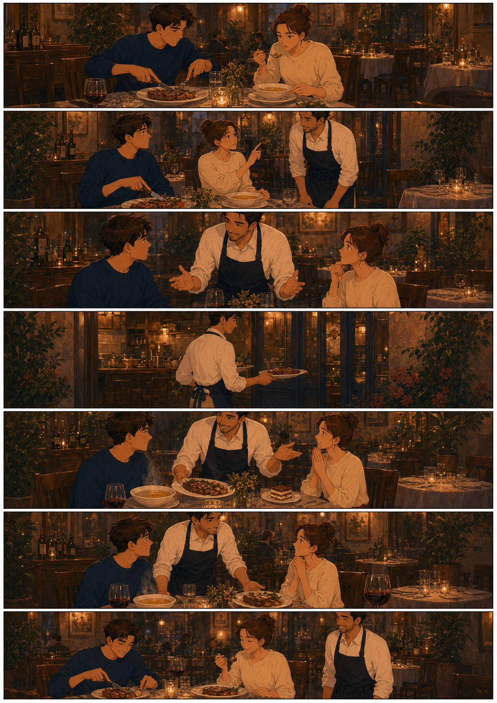
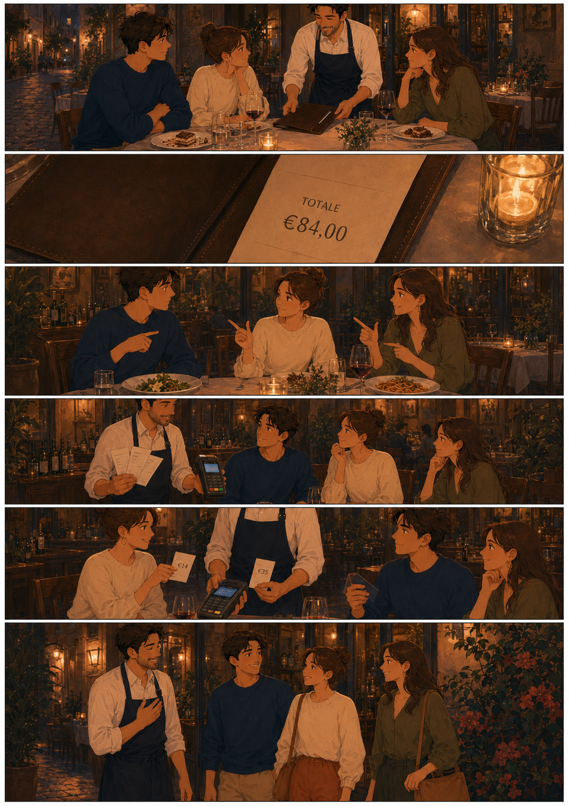

Book a table by phone, decode a menu in a foreign language, order a full 3-course meal, split the bill three ways, complain about cold soup, and tip like a local — the whole restaurant journey in one lab.
Level
B1 · teens & adults
Duration
~90 minutes
Focus
Menu · Waiter · Bill · Tip
Linked to
Hotel Check-in
00
📍 Recap · from Part 3
You just checked into the hotel. Now — dinner.
Part 3 · Hotel
reservation · reception · bill · tip
these four words come back today in a new setting.
Part 4 · today
Eating Out Deep Dive
book a table · read a menu · order a 3-course meal · handle a complaint · split the bill.
Part 5 · next
City & Directions
what to see after dinner. Coming next time.
By the end of today you can: book a restaurant table by phone, order 3 courses without freezing, ask for the chef's recommendation, complain politely if food is cold, split the bill, and leave the right tip.
01
Welcome to the table
Four mood cards + three warm-up questions. Tap a mood, then answer a card aloud in 3–4 sentences.
Mood 01
Evening street · trattorias
Mood 02
Terrace at sunset

Mood 03
Warm trattoria

Mood 04
3-course dinner
Card 01
What's the last restaurant you ate in?
Name it, city, what you ordered, one thing you loved.
Card 02
Do you leave a tip? How much?
Compare your country vs. Italy vs. the US. Use «I usually…» and «It depends…».
Card 03
Have you ever sent food back?
If yes — what was wrong, and what did the waiter do? If no — imagine one situation.
02
Vocab · Restaurant Core · 16 words
The auto-generated 📖 Vocabulary panel appears above (from lab-vocab-builder). Semantic map by scene ↓
Before you sit down
reservation · to book a table
the two words you use on the phone or app.
At the table
menu · waiter · to order · to recommend · appetizer · main course · dessert
the words for the middle of the meal.
On the table
cutlery · napkin · plate · glass · chef
what your hands touch during the meal.
On the way out
the bill · tip · buffet
the last three minutes at the door.
Drill: pick 6 words from the panel above. Build one sentence per word about your last meal out. Say all 6 aloud in one flow — under 40 seconds.
03
Types of places · where do we eat?
Tap a place to hear it. Say what you can get there in one sentence.

🎯 Match place to purpose
1. Fresh cakes, coffee and one small round table — this is…
2. A small family-run place in Tuscany with home-made pasta — this is a…
3. British pub food but with a real chef — this is a…
4. Croissant, café au lait, morning newspaper — you are in a…
04
On the table · 7 things
Look at the photo below and name every item aloud. Then tap the buttons to hear each word.
🎯 Which one do you need?
1. Knives, spoons, forks and teaspoons together are called…
2. «Sorry, my meal is cold, could you please ___ for me?»
3. A restaurant where you serve yourself from a big spread is a…
4. Whatever you can't finish, you can take home in a…
5. Burger King is a ___ restaurant.
05
Label the pictures · 8 restaurant words
Read each definition. Say the word aloud, then check with the MCQ.
🍰 A sweet dish at the end of the meal. It's a…
📞 A booking you made in advance so the table is ready. It's a…
🥗 A small dish to start the meal (bruschetta, salad, olives). It's an…
📄 The paper you read to decide what to order. It's a…
💶 The paper you get at the end that says «€ 28.00». It's the…
🥩 The biggest dish — lasagne, steak, pasta. It's the…
💰 The extra you leave for good service. It's the…
👨🍳 The person who takes your order and brings the food. It's the…
4b
Useful Constructions · what to actually say
The exact phrases to walk in with. Tap ▶ next to any phrase to hear it. Read each card aloud twice — the second time faster.
👋
Walking in
at the door
Hi! A table for two, please.
Do you have a table by the window?
Do you have a table for four for 8 p.m.?
3 openers · pick one
📖
Asking about the menu
before you order
Could I see the menu, please?
What do you recommend?
What's the chef's special today?
Do you have any vegetarian or gluten-free options?
What's included in this dish?
5 phrases · read the menu
🍽
Ordering
at the table
I'll have the lasagne, please.
For a starter, I'd like the bruschetta.
For the main course, I'll go with the seafood pasta.
Could I have that without cheese?
Medium-rare, please.
5 phrases · placing the order
🍷
Drinks
wine · water · coffee
A glass of house red, please.
Still or sparkling water?
Just tap water is fine.
Two espressos, please.
4 drink lines
⚠️
If something's wrong
polite complaints
Excuse me, my soup is cold — could you warm it up?
I'm afraid this is not what I ordered.
Could I speak to the manager, please?
Sorry, this is a bit under-cooked.
4 polite complaint lines
💶
Paying
at the end
Could we have the bill, please?
Can we split the bill three ways?
Is service included?
Keep the change.
4 lines at the end
🎯 Drill: pick one phrase from each block (6 total). Chain them into a 60-second solo restaurant scene from door to bill. Time yourself.
4c
How to read a menu · 5 hooks
The 5 words that unlock any menu in English — and the 4 layout blocks you'll always find.
tiramisù · lava cake · fruit salad · coffee · wine · water
🔎 5 hook words
grilled · cooked over open fire (steak, salmon)
fried · cooked in hot oil (chips, calamari)
roasted · cooked in the oven (chicken, potatoes)
homemade · made in the restaurant that day (pasta, bread, sauce)
seasonal · uses ingredients that are in season right now
🎯 Drill: for the sample menu in Section 5b, tell your partner what grilled / roasted / homemade means in one sentence each. Then order using at least one of these three words.
5a
Classic Fill-in · «A table for two»
The most classic waiter–guest conversation. Fill the 9 gaps from the word bank.
tableproblemmenuhungryorderfish and chipsbottlethankbill
GuestsA for two, please.
WaiterYes, of course, no . ***
WaiterHere you go. Would you like to see the ?
GuestsYes, please. We are very .
(the guests look at the menu)
WaiterAre you ready to ?
GuestsWe'd like the , please.
WaiterWould you like any drinks?
GuestsAn orange juice, a coke, and a of red wine.
(the guests have finished their meals)
WaiterWould you like a dessert?
GuestsNo, you. Could we have the , please?
5b
Menu Q&A · sample restaurant menu
Meet Trattoria Bella Sera in Ferrara. Read the menu, answer the questions, then practise ordering with the waiter dialogue below — each line has a ▶ to hear it.
Play each line, then repeat it aloud in your own words. Bella Sera tonight, table for two.
WaiterGood evening. Welcome to Trattoria Bella Sera. Table for two?
YouYes, please. Do you have a table by the window?
WaiterOf course. Here is the menu. Can I start you off with something to drink?
YouA glass of house red, please, and a sparkling water for the table.
WaiterExcellent. Have you looked at the menu? Any questions?
YouWhat's the chef's special today?
WaiterGrilled salmon with lemon butter, served with seasonal vegetables — €22.
YouPerfect. For a starter, I'd like the bruschetta al pomodoro.
YouFor the main, I'll go with the seafood linguine — my friend will have the special.
WaiterAny sides?
YouYes, the rosemary potatoes and a bread basket, please.
WaiterPerfect. I'll be back shortly with your drinks.
YouThank you.
🎯 Speaking drill: read the whole scene once with the recording, then close the screen and re-order using different dishes from the same menu. Time yourself — full order in under 90 seconds.
🎯 Menu questions
1. Which is the best starter for someone on a diet?
2. A vegetarian friend joins you. What can they have as a main?
3. You love pasta with seafood. Which dish do you order?
4. What is the chef's special today?
5. Which dessert is the most expensive?
6. What does the footer say about allergies?
Speaking drill: what would you order for a full 3-course meal? Say each course + one drink aloud with the price. Add: «For dessert I'd rather have …».
🔁 Same thing · different words
1. Another word for pasta in this menu is…
2. A list of food (i.e. what you read before ordering) is a…
3. Another word for the bill (US English) is…
4. «Starter» and «appetizer» — are they the same?
06
Listening 01 · Brian & Emma order dinner
Brian is the waiter (UK male), Emma is the guest (UK female). Tap ▶ on each line to hear that speaker.
BrianGood evening. Are you ready to ?
EmmaYes. I'd like the garlic bread as a .
BrianGreat. And for the course?
EmmaI'll have the lasagne, .
BrianExcellent choice. And to ?
EmmaOrange , please.
BrianOK. I'll bring your drink in a .
EmmaThanks.
orderstartermainpleasedrinkjuiceminute
Voice tip: Brian sounds British-male, Emma sounds British-female (auto-picked from your browser). Play a couple of lines back-to-back to hear the switch.
07
Listening 02 · Alex & Jamie dine out
A cozy restaurant. A couple, Alex and Jamie, orders a full 3-course meal. Twelve gaps.
WaiterGood evening! Can I start you off with something to ?
AlexHi! We'll have a bottle of house , please.
JamieAnd some sparkling for the table.
WaiterGreat choice! Have you looked at the ?
AlexNot yet. What do you ?
WaiterThe bruschetta is popular, and the seafood pasta is a favorite.
JamieLet's get the bruschetta to start.
WaiterExcellent! Are you ready for your ?
AlexI'll have the salmon.
JamieAnd I'll take the chicken marsala.
WaiterPerfect! Would you like any ?
JamieYes, let's add garlic mashed potatoes.
Waiter(after the main courses) How was everything?
JamieEverything was !
AlexYes, we loved it. Can we see the menu?
WaiterOf course! I recommend the chocolate lava cake.
JamieThat sounds perfect. We'll have one of those!
Alex(after dessert) Thank you for the meal.
WaiterMy pleasure! Would you like the ?
JamieYes, please!
🎯 True or False · about Alex & Jamie
1. Alex and Jamie are seated at a table in a restaurant.
2. Alex orders a bottle of house white wine.
3. Jamie orders sparkling water.
4. Alex orders grilled chicken for the main course.
5. Jamie adds garlic mashed potatoes as a side.
6. They order chocolate lava cake for dessert.
7. Jamie thinks everything was terrible.
08
Word Order · Restaurant sentences
Six scrambled sentences. Click pills in the right order.
Target: ask for a table
Target: ask for the menu
Target: state your main course
Target: ask the waiter for a tip
Target: ask for the bill
Target: reservation on the phone
09
Grammar Recap · 5 tenses in the restaurant
Same 5 tenses you drilled with the hotel — now in a restaurant scene. One try per question.
1. Past Simple. Last night I ___ dinner at a lovely trattoria.
2. Present Perfect. I ___ Italian food twice this week.
3. Present Continuous. The chef ___ our main course right now.
4. Future Simple. I ___ the seafood pasta.
5. Present Perfect Continuous. We ___ for the bill for 15 minutes!
6. Right now the waiter ___ our order.
7. I ___ at this restaurant three times last month.
8. They ___ the bill 10 minutes ago.
10
Big Scene · Mary orders for her family
Restaurant with husband and daughter. Put the missing sentences in the right slot.
A table for three pleaseCan you give me the menu pleaseYes, I'll have the roast chicken and salad, my husband will have spaghetti, our daughter prefers pizzaJust some water for me and a coke for my daughterNo, just the bill, please
WaiterCan I help you?
Mary.
WaiterCome this way, please.
Mary?
WaiterOf course, here you are.
(ordering)
WaiterAre you ready to order?
Mary.
WaiterAnything to drink?
Mary.
(after the meal)
WaiterCan I get you anything else? Coffee? Dessert?
Mary.
Speaking drill: read Mary's lines aloud. Then change ONE detail: your family, your order, your drink. Play again from memory.
🎯 True or False · about Mary's family
1. Mary will order a pizza.
2. Mary's husband is at home.
3. They will drink some juice.
11
Role-Play Lab · three scenarios
Three real restaurant situations. Read your role only, then play out loud with your partner or teacher.
🎭 Scenario A · Standard ordering

Role A · Guest
Ask for a table for two.
Order: 1 appetizer + 2 main courses + 1 side + drinks.
Ask what the waiter recommends and take one of the suggestions.
At the end — ask for dessert menu and pay the bill.
Role B · Waiter
Greet, seat, hand the menu, take drink order first.
Recommend today's special (grilled salmon with lemon butter).
Check back mid-meal («How is everything?»).
Offer dessert, bring the bill, thank them.
⚠️ Scenario B · Cold food complaint

Role A · Dissatisfied guest
Your soup is cold. Your steak is under-cooked.
Stay polite but firm. Ask the waiter to warm it up or bring a replacement.
If it happens twice — ask for the manager.
Use: «Excuse me, my soup is cold, could you warm it up?» · «I'm afraid this steak is under-cooked.»
Role B · Waiter / Manager
Apologise. Take the plate back to the kitchen.
Offer to bring a fresh dish + a complimentary glass of wine or dessert.
Do not argue with the guest. Repeat the issue back to show you heard.
Come back in 5 minutes to check the replacement is good.
💶 Scenario C · Splitting the bill

Role A · Group of friends
Total bill: €84. Three of you.
One person had only a salad + water (€14).
Two people shared wine + main + dessert (€35 each).
Decide how to split. Ask the waiter to bring three separate bills or one bill you split by card.
Role B · Waiter
Offer both options: three separate cheques, or one bill split by card.
Suggest a 10% service charge if it's not included.
Bring change or run the cards.
Say thank you and «Have a good evening.»
Drill order: read your role silently → play out loud once slowly → switch roles → play again fluently without script. ~5 min per scenario.
12
Group the phrases · Waiter or Client?
Who typically says each phrase? Pick the right side.
1. «Are you ready to order?»
2. «Here are your menus.»
3. «What do you recommend?»
4. «I'll pay with a credit card.»
5. «Everything is great, thank you!»
6. «How many are in your party?»
7. «I'll have a glass of red wine, please.»
8. «Would you like to see the dessert menu?»
9. «Have a great evening!»
10. «I think we're ready to order.»
13
Reading · Rebuild the order · seafood pasta
Read the 4 short mini-dialogues. Match each to the right heading.
A. — «Good evening! Can I start you off with something to drink?» — «Yes, I'll have a sparkling water, please.» — «And for you?» — «I'll take a lemonade, thank you.»
B. — «What do you recommend for a main course?» — «The chicken parmesan is very popular, and the seafood pasta is also a favorite.» — «I think I'll try the seafood pasta.» — «Excellent choice!»
C. — «Hi, I'd like to make a reservation for two for Saturday night.» — «What time would you like?» — «7 PM, please.» — «Got it! We'll see you then.»
D. — «Could we get the check, please?» — «Of course! I'll bring it right away.» — «Thank you!»
🎯 Match dialogue → heading
Dialogue A is about…
Dialogue B is about…
Dialogue C is about…
Dialogue D is about…
🎯 Match dialogue to the scene
E. — «Do you have any vegetarian options?» — «Yes, we have a delicious vegetable risotto and a quinoa salad.» — «I'll go with the risotto, please.»
F. — «How is everything?» — «It's fantastic! The steak is cooked perfectly.» — «I'm glad to hear that!»
G. — «Would you like to see the dessert menu?» — «Yes, please! What's the special today?» — «We have a chocolate lava cake that's to die for.»
H. — «How was your meal?» — «It was wonderful! Thank you for the great service.» — «It was a pleasure serving you.»
Dialogue E is about…
Dialogue F is about…
Dialogue G is about…
Dialogue H is about…
14
Table Manners · 9 quick rules
Fill in the words. Read each rule aloud once you have it right.
sit upfingerselbowsspoonmouthlickforkpeppersay
1. You should straight.
2. You shouldn't eat with your .
3. You shouldn't put your on the table.
4. You should put your dirty knife, and fork on your plate.
5. You shouldn't talk with your full.
6. You shouldn't your fingers.
7. You shouldn't take bread with the .
8. You shouldn't take salt, with your fingers.
9. You should «Thank you» after the meal.
15
🇮🇹 Italy Bonus · after the meal
Three regions, three landscapes — vocab you'll need to talk about Italy after tonight's dinner.
Rome · Piazza Navona
fountain · architecture · piazza
230 fountains in Rome — throw a coin if you want to come back.
Venice · canals
canal · gondola · bridge
no roads — only canals. The city is built on 100 small islands.
Aosta Valley · Mont Blanc
peak · slope · cable car
the highest peak in Europe. Skiing slopes and hiking trails.
Rome · Piazza NavonaVenice · canalAosta Valley · Mont Blanc
🎯 Which region?
1. You want to take a gondola — you go to…
2. You want to ski the highest peak in Europe — you go to…
3. There are 230 fountains here — this city is…
4. This city has no roads — only water. It's…
Speaking drill: pick one region. In 60 seconds tell your partner: «If I had one week in Italy, I'd go to … because … . I'd eat … , see … and try …».
📖 Reading · Best Places in Italy — three friends' picks
Roberto: There are 20 regions in Italy, and each region has its own architecture, traditions and food. My favourite is Sicily — the largest island in the Mediterranean sea. It has amazing beaches, wonderful nature and a rich history. My favourite place in Sicily is Syracuse. It is an ancient city and the birthplace of Archimedes, the famous mathematician!
Sofia: To me, Italy is the land of art. That's why Florence is my favourite place. Its best sight is Florence Cathedral — a very tall religious building with a beautiful roof. There are many museums and art galleries in Florence where you can see the wonderful works of famous artists such as da Vinci and Michelangelo.
Anna: Almost every place in Italy has a long history, and Milan is no exception. But Milan is very modern, and that's what I love about it. Of course, there's plenty of beautiful old architecture too, but Milan is also the capital of fashion. I always enjoy the best shopping in the oldest mall — Galleria Vittorio Emanuele II.
🎯 Reading comprehension · 6 questions
1. Which place is the best for buying clothes?
2. Which place is famous for a beautiful big church?
3. Which place has the sea around it?
4. Which place is where a famous mathematician was born?
5. Which place has both old and new architecture side by side?
6. Where can you see many paintings and sculptures by da Vinci and Michelangelo?
16
📚 Homework · before our next class
Re-read Section 07 Alex & Jamie aloud. Change one detail (the wine, the main course, the dessert) — build your own version.
Write 10 sentences using 10 different words from Section 02 (Restaurant Core). Include at least one Present Perfect and one Future Simple.
Record a 90-second monologue on «Describe the best restaurant you've ever eaten in.» Bring the recording — we'll analyse pace and fluency together.
Prepare Scenario B (Cold food complaint) from Section 11 as a solo monologue: pretend you're calling the manager to complain. 60–90 seconds.
Next lesson: Part 5 · City & Directions — walking the old town, asking a local for directions, one museum visit and one lost-then-found moment. 🗺️

![A beautifully hand-illustrated dinner menu for Trattoria Bella Sera in Ferrara, Italy, on cream paper with navy blue and terracotta accents. Eight sections numbered 1 to 8: (1) STARTERS with bruschetta al pomodoro €8, caprese salad €9, garlic bread with herbs €7, antipasto plate €14, soup of the day €8, fried calamari €13; (2) PASTA with spaghetti carbonara €14, tagliatelle bolognese €15, penne arrabbiata €13, seafood linguine €18, mushroom truffle ravioli €17, lasagna della casa €16; (3) RISOTTO & VEGETARIAN with risotto ai funghi €15, lemon asparagus risotto €16, grilled vegetable plate €14, eggplant parmigiana €15, spinach ricotta cannelloni €16; (4) MAIN COURSES with grilled salmon with lemon butter €22, chicken marsala €19, steak with rosemary potatoes €26, roast sea bass €23, herb roasted chicken €20, pork medallions in cream sauce €21; (5) SIDES with rosemary potatoes, grilled vegetables, mixed green salad, butter rice, bread basket; (6) DESSERTS with tiramisu €8, panna cotta €8, chocolate lava cake €9, lemon tart €8, gelato trio €7, dessert of the day €8; (7) DRINKS with still water, sparkling water, fresh lemonade, cappuccino, espresso, house red wine €7 glass, house white wine €7 glass, aperol spritz €9; (8) CHEF RECOMMENDS with today's special grilled salmon with lemon butter served with seasonal vegetables €22. Decorative olive branches, tomatoes, olive oil bottle and lemon illustrations around the sides. Footer reads please inform your waiter about allergies or dietary needs.](./assets/img/menu-trattoria.png)